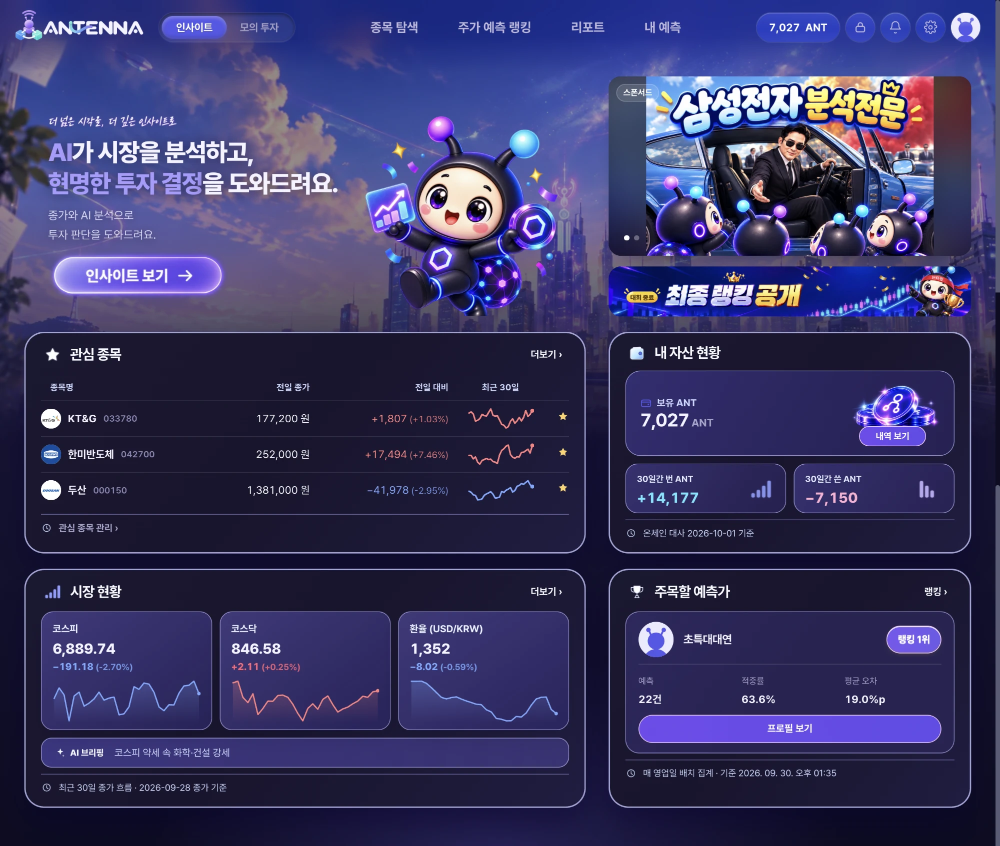

01 · Blockchain
Antenna
주식 예측을 등록 시점에 봉인하고 블록체인에 기록해, 나중에 아무도 고칠 수 없게 만든 예측 플랫폼
🏆 SSAFY 특화 프로젝트 우수상
기간2026.08.17 – 09.30 (6주)인원6명역할백엔드 · 블록체인

내가 한 일
- Spring Boot 기반 백엔드 구현
- Solidity로 컨트랙트 3종 작성 및 배포
- ANT 토큰 설계 및 구현
- DB – 체인 간 싱크를 맞추는 릴레이어·인덱서 구현
Java 21Spring BootWeb3jPostgreSQLRedisSolidityHardhat
핵심 설계 — 근거 해시(noteHash)를 salt로 겸하기
예측은 경우의 수가 적어 해시만 공개돼도 내용을 맞출 수 있습니다. 그래서 난수를 섞어야 하는데, 원안은 서버 난수와 근거용 난수 두 장이었습니다. 근거 해시에 이미 난수가 들어 있으니 바깥 해시의 난수 역할도 겸할 수 있다고 보고 서버 난수를 없앴습니다.
Before서버가 난수를 만들어 보관 · 유출·바꿔치기 걱정
→
After서버가 숨길 비밀 없음 · 비구독자는 포함 여부만, 구독자는 내용까지 검증
트러블슈팅 — 체인에 이미 있는 번호를 성공으로 처리하던 버그
재전송 규칙을 새 기록에도 적용해, 남이 올린 기록을 우리 것으로 확정할 수 있었습니다. 체인에 기록된 값과 우리 값을 대조해 다르면 실패로 처리하도록 고쳤습니다.